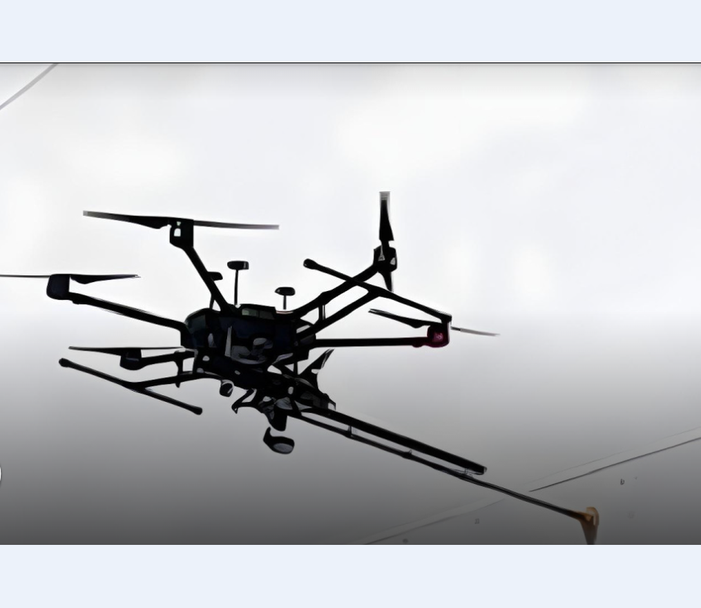

Robotics
Autonomous Drone Inspection System
PETRONAS-focused UAV system for ultrasonic thickness (UT) measurement and localized industrial inspection in elevated and hard-to-access areas.
- Developed autonomous flight and sensing pipelines for repeatable UT measurement missions under industrial site constraints.
- Integrated ultrasonic sensing and ROS-based communication for safer at-height asset measurement workflows.
- Supported deployment validation with robotics and maintenance stakeholders.
PETRONAS success story: UT measurement at height
Related publication: Design, implementation and evaluation of ultrasonic measurement using ROS and MQTT (IEEE ICSPC 2020) · PDF